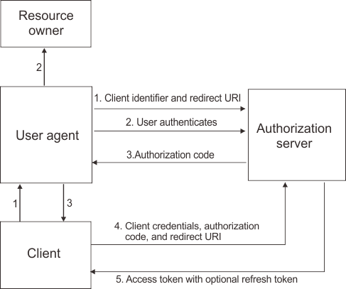

Sicherheit, Privatsphäre und Vertrauen im Netz - WS 2020/2021
Systemübergreifende Identitäten und Single Sign On
Systemübergreifende Identitäten und Single Sign On bezeichnet die Möglichkeit, die Anzahl der Anmeldeinformationen bei einer Vielzahl von Systemen zu reduzieren. Darüber hinaus wird ein Austausch von benutzerbezogenen Informationen ermöglicht. Die Ausarbeitung stellt die Funktionsweise anhand ausgewählter Architekturen und Protokollen mit entsprechenden Beispielen dar. Dafür werden unter anderem die Protokolle SAML und OAuth 2.0 betrachtet.
